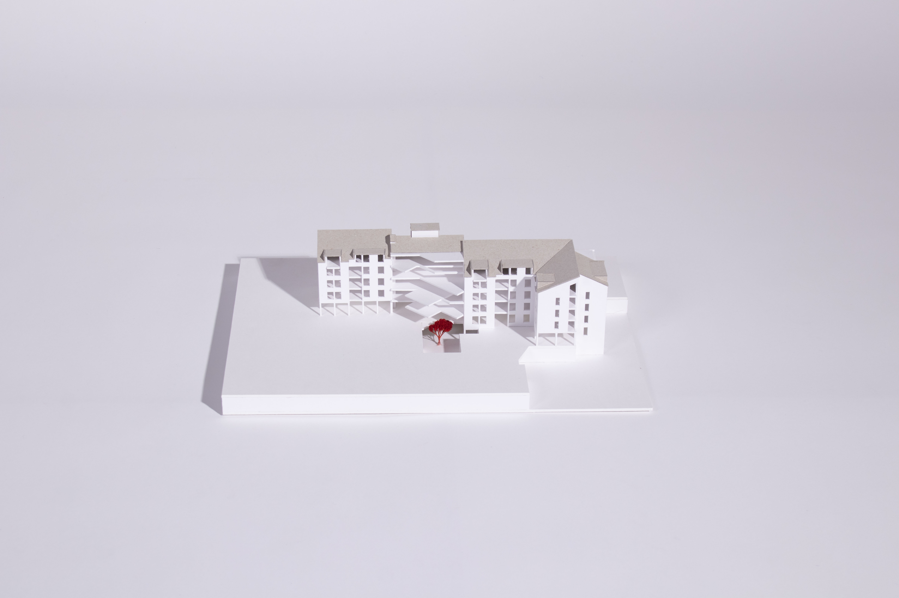

space museum
Der Entwurf basiert auf dem proportional skalierten Raum zwischen den Umlaufbahnen von Erde und Mars. Die Mittelpunkte der Umlaufbahnen sind leicht versetzt, wodurch der Zwischenraum variiert und unterschiedliche Dimensionen entstehen. Um die Ausrichtung hin zum Weltraum zu betonen, hebt sich die Konstruktion von der Erdoberfläche ab und ist um 4° geneigt. Getragen wird das Museum von zwei Brückenpfeilern. Der Zugang erfolgt über eine großzügige Freitreppe an einem der Enden. Das Museum ist natürlich beleuchtet und wird durch elektrochromes Glas vor Überhitzung geschützt. Der Grundriss des Museums ist offen: lediglich zwei eingestellte Boxen bilden geschlossene Räume, welche für Besprechungen, Personalräume und Toiletten genutzt werden.
